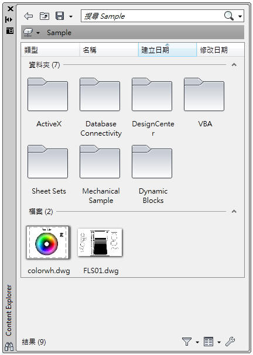
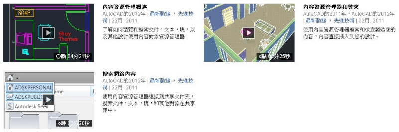

我覺得AutoCAD之前的設計中心(Ctrl+2)，之前我都稱他為AutoCAD專屬的檔案總管，顧名思義就是說像是Windows的檔案總管的操作方式，現在AutoCAD 2012竟然出現了升級版 Content Explorer 內容瀏覽器。
以下引用官網的說明，請各位朋友仔細看看吧~
內容瀏覽器是一款功能強大的索引建立與搜尋應用程式，其外觀設計類似AutoCAD 外部參考管理員視窗，不僅簡潔而且俐落。也如同其他 AutoCAD 中的次視窗一樣，您可以規劃透明度、自動收闔和停靠等偏好。

瞭解內容瀏覽器視窗(點我)

原廠影片介紹(英文):